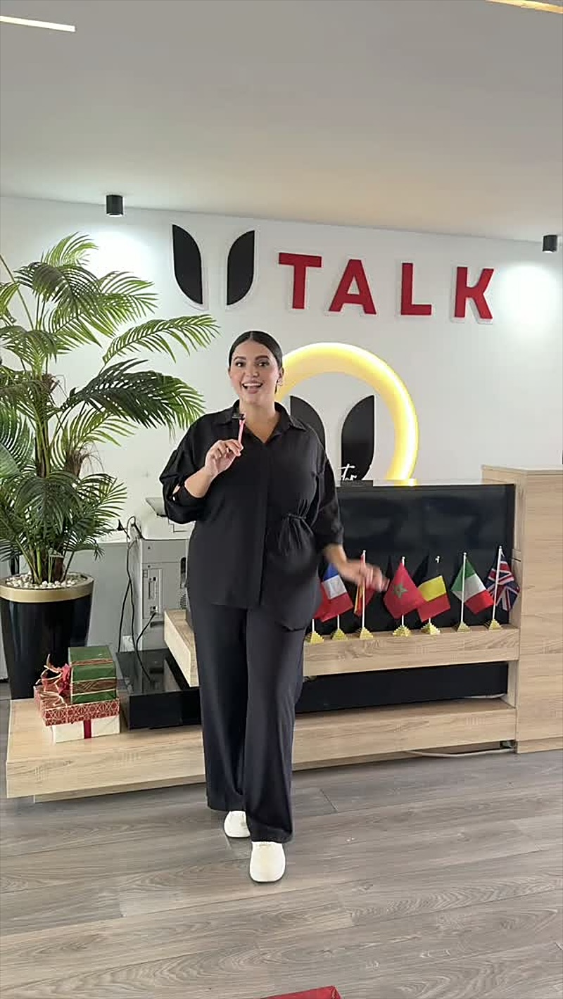
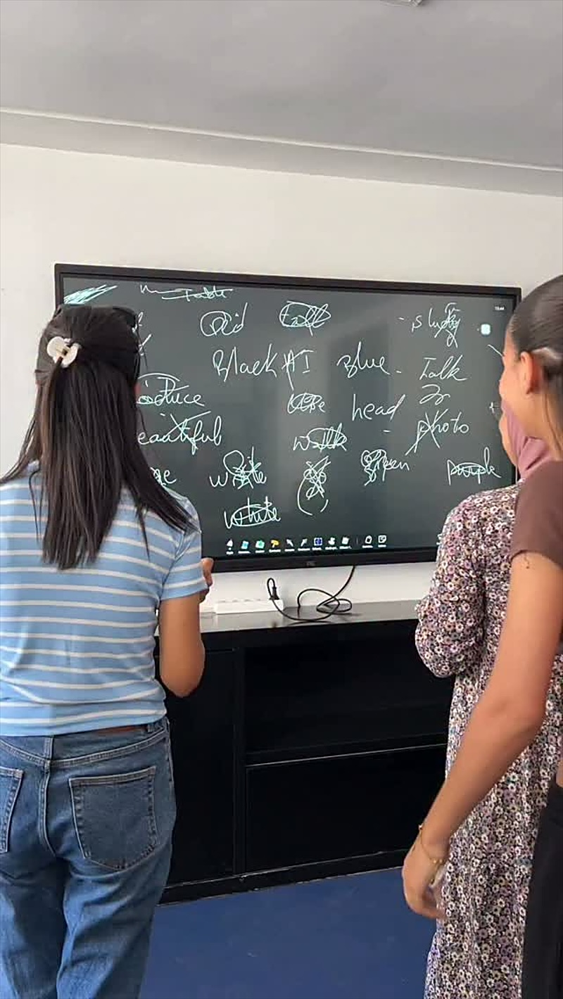
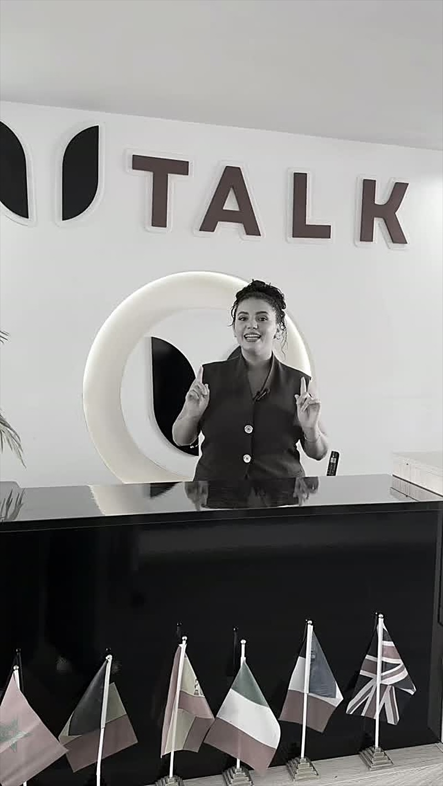
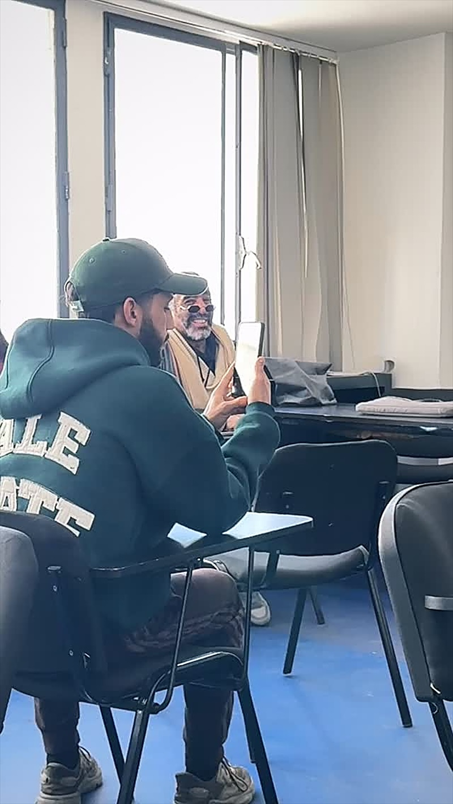
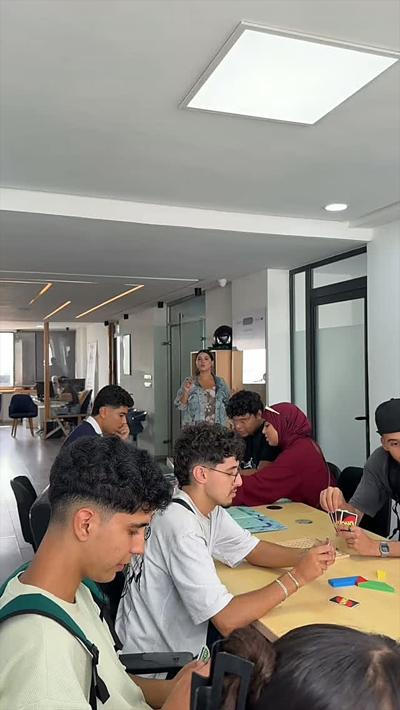
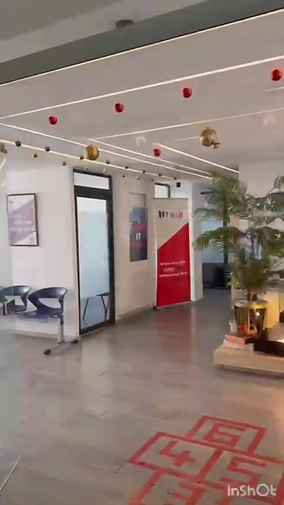
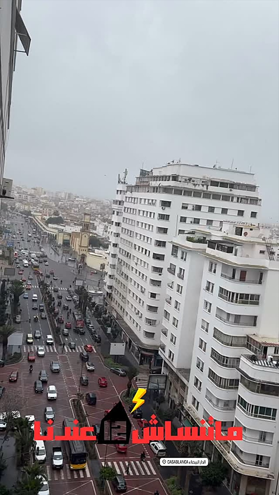
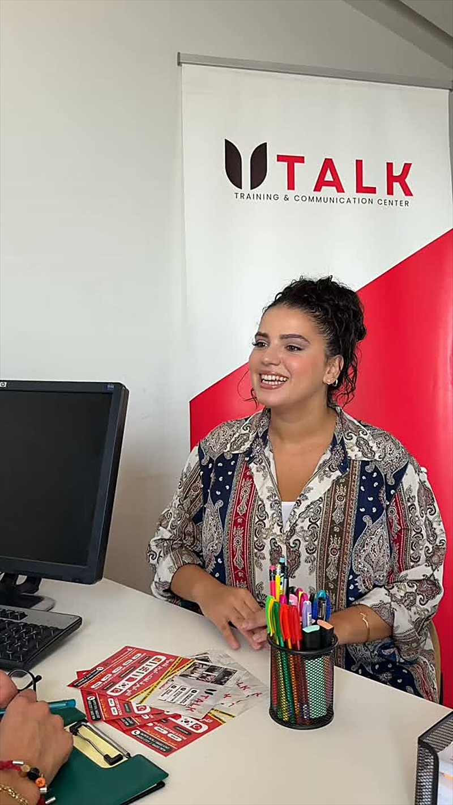

À propos d’UTALK
Un centre de langues et de communication au cœur de Casablanca, où l’on apprend en parlant.

Qui sommes-nous ?
UTALK Center est un centre de formation en langues et en communication, installé au centre-ville de Casablanca. On y apprend l’anglais, le français, l’allemand, l’espagnol et l’italien.
- +5 langues, du niveau A1 au niveau C1
- Cours en groupe et cours individuels
- Le TalkLab pour pratiquer l’oral
- Au 12e étage de l’Immeuble 44, avenue des FAR

Notre philosophie
Parler d’abord
L’oral est au centre de chaque cours.
Pratiquer
Le TalkLab pour utiliser la langue en situation réelle.
Progresser
Des niveaux clairs, de A1 à C1, pour avancer pas à pas.
Oser
Une ambiance conviviale où l’on parle sans stress.
Le centre en images






Où nous trouver
Centre-ville de Casablanca · Avenue des FAR, Immeuble 44 · 12e étage